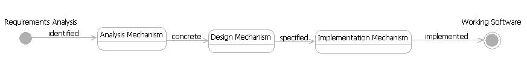

| Concept: Architectural Mechanism |
 |
|
| Related Elements |
|---|
The value in defining architecture mechanisms is that they:
An architectural mechanism can have three states: analysis, design, and nmplementation. These categories reflect the maturity of the mechanism's description. The state changes as successive levels of detail are uncovered when you refine architecturally significant requirements into working software. The categories are summarized in the table that follows. States of an Architectural Mechanism
Be aware that these states are frequently referred to themselves as analysis, design, and implementation mechanisms. These are synonyms, and merely represent the architectural mechanisms in different states of development. The transition from one state to another can often be obvious or intuitive. Therefore, it can be achieved in a matter of seconds. On the other hand, it can also require more considered analysis and design, thus take longer. The following diagram illustrates the transition of architectural mechanisms from one state to another. The important point here is that these categories of mechanisms apply to the same concept in different states. The only difference between them is one of refinement or detail. Refer to Architectural Mechanism for more background information. See Example: Architectural Mechanisms for a list of typical mechanisms. The main reason for using architecture mechanisms as an approach to analysis and design is that they facilitate the evolution of architecturally significant aspects of the system. They allow the team to maintain a cohesive architecture whilst enabling implementation details to be deferred until they really need to be made. State Machine for Architectural Mechanisms
 Architectural mechanisms represent key aspects of the technical solution that need to be standardized across the project. Everyone on the project should handle these concepts in the same way, and re-use the same mechanisms in their code. Architectural Mechanisms are used to satisfy architecturally significant requirements. They often equate to technical services or framework components in the software, and form the basis for standardizing the way that the software works. Therefore, they are an important element of the overall software architecture. Defining architectural mechanisms also enables you to make decisions about whether existing software components can be reused to provide the required behavior, or whether new software should be bought or built. The key point to understand when discussing architectural mechanisms is that defining them is all about making choices about what technology will be used to satisfy architecturally significant requirements. It is not about producing detailed design up front. This is a common misunderstanding. Creating detailed design and software that shows how specific mechanisms are satisfied is a development task. |
| Concepts | |
|---|---|
| Examples | |
| Guidelines |
This program and the accompanying materials are made available under the |